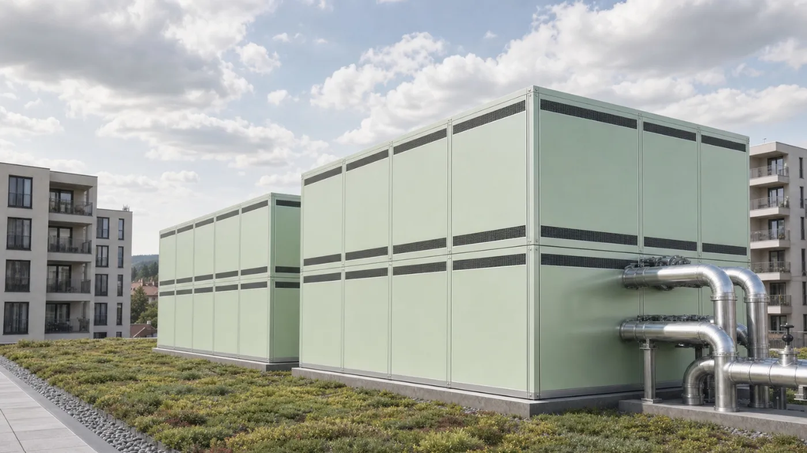
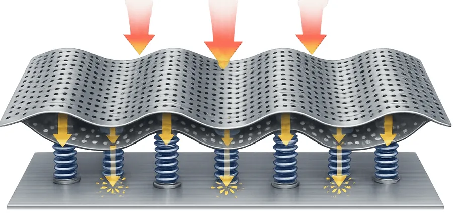
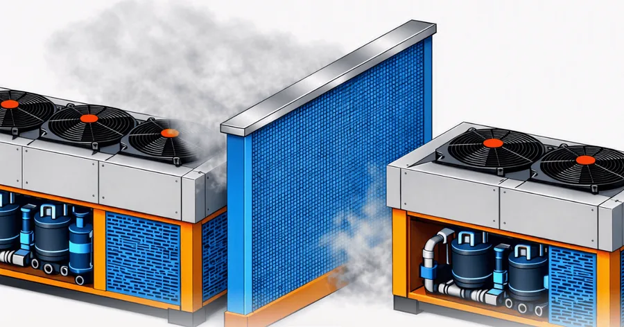
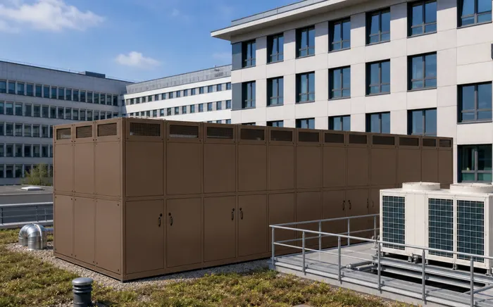
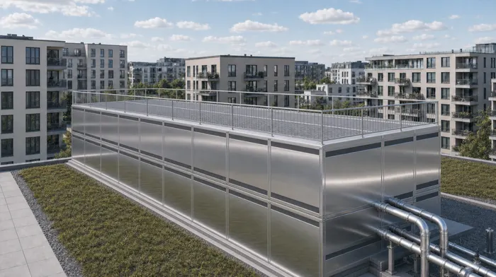
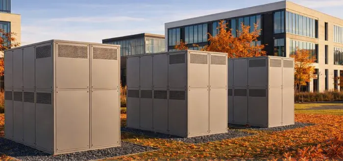
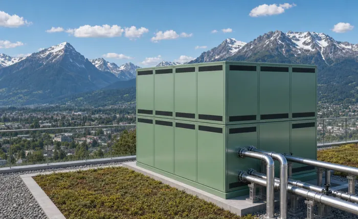
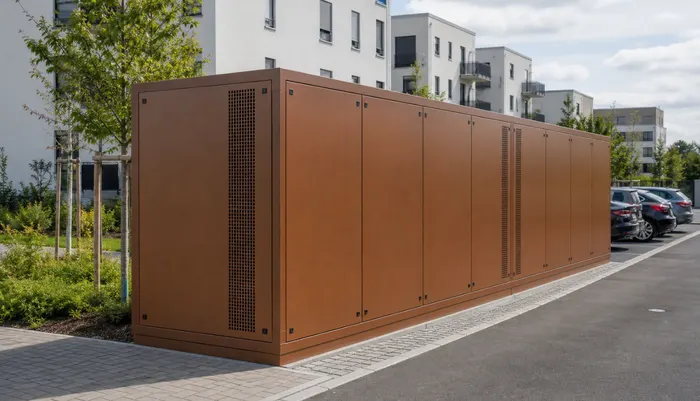
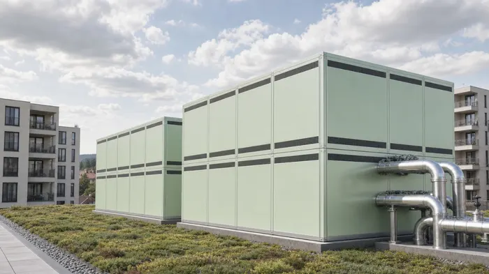

Schallhauben für Wärmepumpen, Kälteanlagen und PV-Wechselrichter
Wir legen Schallhauben und Schalleinhausungen für jede Anlage passend aus – mit CFD-Simulation, BIM und Akustikberechnung nach TA Lärm. Leise für die Nachbarschaft, ohne die Anlage auszubremsen.

Wofür wir Schallhauben bauen
Von der einzelnen Wärmepumpe bis zur Technikzentrale mit mehreren Großwärmepumpen: Jede Haube wird auf das Gerät, den Aufstellort und den geforderten Immissionsrichtwert ausgelegt.
Wärmepumpen und Großwärmepumpen
Von Kompakt-, Split- und Poolwärmepumpen (H-Serie) bis zur Kaskade mehrerer Großgeräte in einer gemeinsamen Haube (CM-Serie), auch mit R290 (Propan) – Schutzbereich und Gaswarnung inklusive.
Kaltwassersätze und Rückkühler
Einhausungen für Chiller, aufgesetzte Schallkulissen für Ventilatoren von Rückkühlern und Verflüssigern – mit geprüfter Luftführung.
VRF/VRV-Außengeräte
Für horizontale und vertikale Luftführung. Standardhauben passend zu Daikin, Mitsubishi Electric, Panasonic, LG, Samsung, Toshiba und Haier, auch als Modulkombination.
Katalog VRF/VRV →PV-Wechselrichter und BESS
Ausgelegt auf die typischen Pegelspitzen bei 16–18 kHz. Schützt zusätzlich vor Sonne und Hitze (Derating), Regen, Hagel und Staub. Wandmontage oder freistehend für 1 bis 5 Wechselrichter – u. a. Huawei, SMA, Fronius, Sungrow.
Katalog PV-Wechselrichter →Schallwände und Montageplattformen
Wo eine vollständige Einhausung nicht möglich ist. Die Minderung ist geringer als bei einer Haube – oft reichen aber schon 6 bis 10 dB(A), um die Richtwerte einzuhalten.
HSA3 statt klassischer Absorber
Standard in unseren Hauben ist HSA3, das von der ABSORA GmbH (Berlin) entwickelte und patentierte Meta-Akustik-Metall. Viele kleine, periodisch angeordnete Kammern und Resonatoren dämpfen gezielt die Frequenzen, in denen Verdichter und Ventilatoren die Nachbarschaft belasten.
Technische Planung und akustische Auslegung liegen bei Silent Engineering, Fertigung und Montage übernehmen wir in unserer Allianz mit ABSORA – Auslegung und Ausführung aus einer Hand, ohne Schnittstellenverluste zwischen Berechnung und Umsetzung.
Alternative Innenverkleidung: Stratocell® Whisper® 50 mm FR (PE-Schaum, breitbandig, feuchtebeständig, schwer entflammbar). Prüfbericht und technische Unterlagen zu HSA3 auf Anfrage: info@forcotech.com
So wirkt HSA3 – einfach erklärt


Ein Baukasten – vom Bauteil bis zur Haube
Kompressor-Panel
Deckt den Verdichterraum ab und senkt das typische tieffrequente Dröhnen.
Ventilator-Zylinder
Kit gegen den tonalen Ventilatorton (Blattfrequenz = Schaufelzahl × Drehzahl).
Trennwand
Entkoppelt benachbarte Geräte akustisch und strömungstechnisch.
Komplette Einhausung
Für BESS, Großwärmepumpen, Rückkühler, Kaltwassersätze und VRF/VRV-Kombinationen.
So wirkt es am besten
- Rahmen luftdicht ausführen – entscheidend für tiefe Frequenzen
- Möglichst nah an der Schallquelle platzieren
- Leitblech mit 50–90° Umlenkung oder Schallkegel gegen Pulsation (ca. 3–7 dB(A))
Das vermeiden wir
- Spalten und Vibrationen – sie kosten Wirkung und Druck
- Klebeband statt Dichtmasse
- Front- und Rückwand parallel zur Strömung
Abbildungen: schematische Darstellungen.
Wohin der Schall geht, entscheidet die Luftführung
Bei luftgekühlten Anlagen wird oft nur über dB(A) gesprochen – nicht darüber, wie das Gerät ansaugt und ausbläst. Genau das bestimmt aber, wohin der Schall geht und wo eine Maßnahme überhaupt wirkt.
Vertikal ausblasend
Ventilatorschall nach oben, Verdichter seitlich. Kritisch für obere Geschosse und höhere Nachbargebäude.
Tischbauweise
Luft von unten. Ein Teil des Schalls wird an der Dachfläche reflektiert und tritt seitlich aus.
Tischbauweise umgekehrt
Ausblasen nach unten: Der Schall breitet sich flach in alle Richtungen aus – mit Risiko eines Luftkurzschlusses.
Horizontal ausblasend
Luft und Schall frontal. Vor einer Wand oder in einer Ecke kommen bis zu 6 dB hinzu.
Kanalgebunden
Nach außen wirken nur die Öffnungen – hier sind Kanalschalldämpfer am effizientesten.
RLT mit WRG
Fortluft und Außenluft strahlen beide ab und müssen gegen Kurzschluss getrennt werden.
Für alle gilt: Jede Kulisse kostet Druck. Steigt der Druckverlust, dreht der Ventilator höher – und der Pegel steigt wieder. Deshalb legen wir Akustik und Strömung immer gemeinsam aus.
Technik und Auslegung
Eine Schallhaube darf die Anlage nicht ersticken. Deshalb legen wir Akustik und Luftführung gemeinsam aus und prüfen beides, bevor gefertigt wird.
- CFD-Simulation der Luftführung und des Druckverlusts – keine Strömungsgeräusche, kein Luftkurzschluss durch getrennte Zu- und Abluftkammern
- Akustikberechnung nach TA Lärm mit Schallleistung, Abstand und Gebietsart
- BIM-Modell für die Abstimmung mit Planern und Bauleitung
- Statik und Windlast nach DIN EN 1991-1-4, auch für Dachaufstellung
- Wartungsfreundlich: Türen und abnehmbare Paneele für Service und Austausch
Zielwerte vor der Detailkonstruktion
- Luftgeschwindigkeit in den freien Öffnungen idealerweise 5–7 m/s
- Schallminderung am Immissionsort z. B. 10–15 dB(A), entscheidend für den Nachtbetrieb
- Leistungseinbuße der Anlage durch die Haube max. 3–5 %
Beispiel: 100.000 m³/h bei 5 m/s erfordern rund 5,6 m² freie Fläche – auf der Zu- und auf der Abluftseite.
Bauweise
Robust, modular und auch nachträglich anpassbar.
- Tragwerk aus eloxierten Aluminium-Profilen
- Pulverbeschichtete Paneele in RAL-Farbe nach Wahl
- Innenverkleidung aus HSA3 (Absora-Technologie), nicht brennbar A1, mit Resonanzhohlraum
- Verschraubt statt geschweißt – rückbaubar, wiederverwendbar und jederzeit erweiterbar (Türen, Wartungsstege, Sensoren)
- Leichte Module: Transport auch übers Treppenhaus aufs Dach, ohne Kran – ideal für die Nachrüstung
- Röhrenschalldämpfer im Dach für den Luftaustritt nach oben
- Ohne Boden und berührungsfrei um die Anlage gebaut – so wird Körperschall nicht auf die Haube übertragen
Schallschutz für Anlagen mit brennbaren Kältemitteln (R290)
Eine Schallhaube um eine R290-Anlage ist machbar – aber nur mit schriftlicher Freigabe des Geräteherstellers und einer Bauweise, in der ausgetretenes Propan frei nach unten abfließen kann. Der BWP-Leitfaden sieht eine nachträgliche Einhausung grundsätzlich kritisch; vertretbar ist sie nur, wenn der Hersteller die konkrete Lösung bestätigt und das Aufstell- und Sicherheitskonzept fortgeschrieben wird.
Unsere Standardbauweise – berührungsfrei, ohne Boden, Innenverkleidung HSA3 in A1 – erfüllt die konstruktive Grundforderung bereits. Projektbezogen kommen Herstellerfreigabe, Zonenfestlegung und der Nachweis der Öffnungen hinzu.
Kein Boden, keine Senke
Propan ist rund 1,5-mal schwerer als Luft und fließt wie Wasser. Die Haube bleibt unten offen, ohne Schwellen und Vertiefungen.
Keine Zündquellen
Keine Leuchten, Steckdosen, Schalter oder Antriebe in der Haube – außer in Ex-Ausführung für die festgelegte Zone.
Unverschließbare Öffnungen
Lüftungs- und Entlastungsöffnungen wirken auch bei Sturm, Schnee und stehenden Ventilatoren.
Sturm- und Entlastungsöffnungen
- Bodenspalt: umlaufend frei, Mindesthöhe in Abstimmung mit dem Hersteller; Gefälle nach außen, nie Richtung Lichtschacht, Gully oder Dachablauf. Auf Flachdächern darf die Attika den Abfluss nicht stauen.
- Querlüftung: Öffnungen auf mindestens zwei gegenüberliegenden Seiten, keine motorischen Klappen – falls akustisch nötig, nur stromlos offen und winddrucksicher. Eine Ventilator-Spülung des Herstellers darf die Haube nicht behindern.
- Druckentlastung: liegt eine Ex-Zone in der Haube, Entlastungsflächen nach DIN EN 14994 – der offene Dach-Luftaustritt ist die natürliche Entlastungsfläche.
Warum eine geschlossene Hülle gefährlich ist
Propan ist ungiftig, aber extrem entzündbar und schwerer als Luft. Beispiel: Eine Doppelhaube mit 12 × 4,2 × 3,9 m (ca. 197 m³) erreicht gleichmäßig verteilt schon mit etwa 7,5 kg Propan die untere Explosionsgrenze – am Boden geschichtet lokal deutlich früher. Großwärmepumpen enthalten ein Vielfaches davon.
Zielkonflikt mit der Akustik
Jede Bodenöffnung ist eine Schallbrücke. Unsere Lösung: eine umlaufende Schallschürze mit Abstand oder ein flaches Labyrinth mit HSA3-Auskleidung – immer mit Gefälle nach außen. Luftführung und Gasabfluss prüfen wir per CFD.
Checkliste für Planung, Ausführung und Betrieb
Planung
- Schriftliche Freigabe des Geräteherstellers für die Einhausung
- Schutzbereich und Füllmenge aus der Herstellerdokumentation
- Zoneneinteilung durch Betreiber bzw. Sachverständigen (Explosionsschutzdokument)
- Schutzbereich reicht nicht auf Nachbargrundstücke, Wege, Parkplätze oder Gebäudeöffnungen
- Kein Lichtschacht, Gully oder Dachablauf im Abflussweg
- Bodenöffnungen auf mindestens zwei Seiten, Querschnitt mit Hersteller abgestimmt
- CFD-Nachweis für Luftführung, Windeinfluss und Gasabfluss
- Entlastungsflächen nach DIN EN 14994, falls eine Zone in der Haube liegt
Ausführung
- Haube ohne Boden, berührungsfrei zum Gerät
- Keine Sockel, Schwellen oder Wannen; Gefälle nach außen
- Elektrische Betriebsmittel nur in Ex-Ausführung für die Zone
- Haubenrahmen im Potentialausgleich (Abstimmung mit der Elektroplanung)
- Keine Klappen in Sturmöffnungen oder nur stromlos offen und winddrucksicher
- Innenverkleidung A1 (HSA3), Absorber mindestens B1
- Kennzeichnung: brennbares Kältemittel, keine Zündquellen
Betrieb und Wartung
- Boden- und Sturmöffnungen bei jeder Wartung auf Laub, Schnee und Gegenstände prüfen
- Keine Lagerung in oder an der Haube
- Arbeiten am Kältekreis nur mit Gaswarngerät und funkenfreiem Werkzeug
Ausführungsbeispiele
Farbe, Größe und Aufbau richten sich nach Gerät und Umgebung – von der kompakten Einzelhaube bis zur begehbaren Großeinhausung auf dem Dach.






Abbildungen: Visualisierungen zur Veranschaulichung von Ausführungsvarianten.
So läuft ein Projekt ab
Vom ersten Richtpreis bis zur fertigen Haube.
Konfigurieren
Gerät, Maße und Akustik im Online-Konfigurator eingeben – Außenmaße, Pegelminderung und Richtpreis sofort.
Auslegen
Unser Engineering prüft Akustik, Druckverlust und Statik projektbezogen, u. a. mit CFD.
Angebot
Verbindliches Angebot mit Zeichnung, Leistungsumfang und Liefertermin.
Fertigung & Montage
Fertigung mit Absora-Technologie, Lieferung und auf Wunsch Montage vor Ort.
Was wir vorab wissen müssen
- Luftvolumenstrom (m³/h) oder Kälte- bzw. Heizleistung (kW)
- Hersteller und Modellnummer der Anlage
- Abstand zum nächsten Immissionsort und dort geltender Richtwert
- Aufstellung auf Flachdach (Gewichtslimit) oder Bodenplatte
- Vorhandene Schallmessung, Pläne zur Montagesituation, Aufmaß oder CAD-Daten des Geräts
Über uns
Hinter ForCoTech und Silent-Mode steht Romolo Vicari. Bei der Entwicklung von Wärmepumpen in China wurde ihm klar, dass der Lärm der Außengeräte zum größten Hindernis werden kann – also entwickelte er die passenden Schallhauben selbst.
2015 wurden die ersten Projekte in Großbritannien realisiert. Seitdem sind Schallhauben in ganz Europa im Einsatz, in kleineren Stückzahlen auch in den USA und bis nach Australien. Seit 2024 führt Silent Engineering di Romolo Vicari mit Sitz in Osnago (Italien) die Entwicklung fort.
Bei der Auslegung setzen wir konsequent auf digitale Werkzeuge – KI, BIM und CFD. Gefertigt wird in Allianz mit der ABSORA GmbH, Berlin.
Häufige Fragen
Für welche Geräte baut ForCoTech Schallhauben?
Für Luft-Wasser-Wärmepumpen und Großwärmepumpen, Kaltwassersätze, Rückkühler, VRF/VRV-Außengeräte und PV-Wechselrichter – einzeln oder als gemeinsame Haube für mehrere Geräte in Kaskade.
Wie viel Schallminderung ist möglich?
Die Standardausführung erreicht ca. −15 dB(A), die Premiumausführung ca. −20 dB(A). Projektbezogen werden die Hauben auf die Richtwerte der TA Lärm am maßgeblichen Immissionsort ausgelegt.
Was kostet eine Schallhaube?
Standardhauben für PV-Wechselrichter beginnen bei ca. 4.550 € netto, Standardhauben für VRF/VRV-Außengeräte bei ca. 15.500 € netto (ohne Montage, zzgl. MwSt. und Fracht). Für alle anderen Geräte liefert der Konfigurator einen Richtpreis.
Geht das auch mit R290 (Propan)?
Ja, mit schriftlicher Freigabe des Geräteherstellers und einer Bauweise ohne Boden, in der ausgetretenes Propan frei nach unten abfließen kann. Keine Zündquellen in der Haube (außer Ex-Ausführung), dauerhaft offene Lüftungsöffnungen; bei Bedarf Gaswarnanlage mit Ex-geschützter Zwangslüftung.
Leidet die Effizienz der Anlage?
Luftführung und Druckverlust werden mit CFD-Simulation ausgelegt; die Luftgeschwindigkeit wird begrenzt und gegen die verfügbare Pressung des Ventilators geprüft, damit die Leistungseinbuße auf max. 3–5 % begrenzt bleibt. HSA3 hat dabei bis zu 60 % weniger Druckverlust als konventionelle Kulissen.
Projekt anfragen
Schicken Sie uns Gerätetyp, Anzahl und Aufstellort – oder holen Sie sich direkt einen Richtpreis im Konfigurator.
Marken ForCoTech und Silent-Mode
Via Trento 22 · 23875 Osnago (LC) · Italien
E-Mail: info@forcotech.com
Web: silent-mode.com